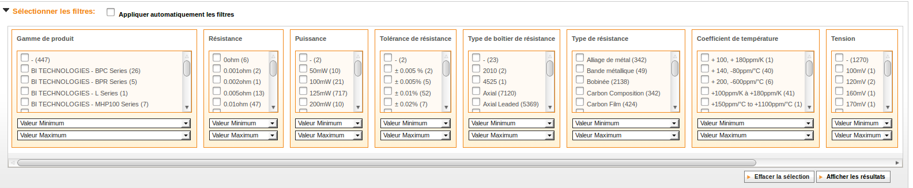
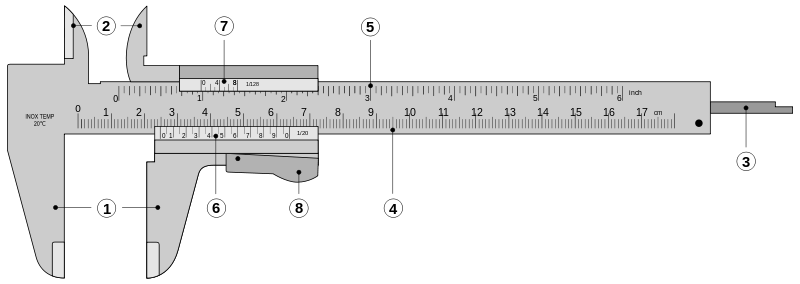

Expérience du 3ème type
Services rendus par les types de Postgresql
À propos
- Grégoire HUBERT
- Fondateur de PragmaFabrik
- Consultant Postgresql & PHP
- Auteur de Pomm

Exploiter les types de Postgres
Un problème d'interface
("<(3,2),1>","{""2014-05-24 13:59:57.142888+00"",""2014-05-24 12:59:57.142888+00""}")
Que représente cette ligne de données ?
Comment l'exploiter ?
L'approche de Pomm

Quelques types de Postgresql
- ➥ boolean, bitchar, bitvar
- ➥ strings, uuid, xml, json, inet
- ➥ numbers, timestamps with time zone, intervals
- ➥ integer et timestamps, ranges
- ➥ point, circle, segment, box, polygon
- ➥ HStore, LTree, ts_vector, bytea
- ➥ types composites, objets
- ➥ tableaux de tous les types ci dessus
- ➥ Ajoutez votre type ici
Convertisseurs de Pomm
- ➥ boolean,
bitchar,bitvar - ➥ strings, uuid, xml, json, inet
- ➥ numbers, timestamps with time zone, intervals
- ➥ integer et timestamps, ranges
- ➥ point, circle, segment,
box,polygon - ➥ HStore, LTree, ts_vector, bytea
- ➥ types composites, objets
- ➥ tableaux de tous les types ci dessus
- ➥ Ajoutez votre type ici
Rangeons un peu
Rangeons un peu
- ➥ Types contenus (texte, nombres, dates, durée, point)
- ➥ Types couvrants (cercle, range, boite)
- ➥ Types structurés (tableaux, JSON, XML, HStore, LTree, composite)
Types & opérateurs
- Chaque type de Postgresql vient avec
- ➥ ses opérateurs
- ➥ ses fonctions
Nous rangeons, ils cherchent
Chercher des résistances électroniques chez Farnell

Nous rangeons, ils cherchent
Résistances électroniques chez Farnell
- ➥ 100 000 références
- ➥ 15 000 références cat. « traversante »
- ➥ 8 axes de recherche
Une résistance en valeurs scalaires
- ➥ Une valeur ohmique (0,1 à 10e⁶Ω)
- ➥ Une précision (5%, à 0,1%)
- ➥ Une tolérance (1/8 à 150W)
- la valeur ohmique annoncée dépend de la précision
- La tolérance est toujours un minimum
Cherchez les dans un range !
- ➥ Permet de proposer les résultats les plus proches
- ➥ Permet de proposer une interface simple
- ➥ Ne gère que les entiers et les timestamps !
Range

- ➥ union, intersection, recouvrement, contenu
- ➥ à droite, à gauche, adjacence
- ➥ peuvent être utilisés pour créer des contraintes d'exclusion
Catégoriser ses contenus
Catégoriser ses contenus
- ➥ Catégories arborescentes
- ➥ Flat tags
- ➥ Nested tags
LTree - chemins matérialisés
'restaurant.italien.pizza'
select * from restaurant where tag ~ '*.italien.*';
LTree + tableaux
{'public.restaurant.italien.pizza', 'public.cuisine.rapide', 'private.evenement.a_la_une'}
select * from restaurant where '*.italien.*' ~ ANY (tags);
Internationalisation (I18N)
Internationalisation (I18N)
- ➥ Proposer des libellés en chaque langue
- ➥ Une jointure par label